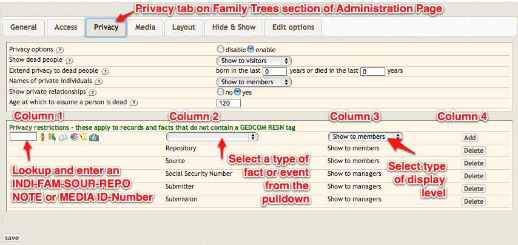

Access and Privacy
Managing Access and Privacy in webtrees
These two topics are described together NOT because they are the same thing, but rather because they are related and often mistaken for each other.
Access refers to WHO can access your site and what they can do there.
Privacy refers to WHAT those people can SEE on your site.
There are four places in webtrees you need to consider when managing access and privacy:
- Site configuration
- User account settings
- Family tree configuration
- Individual records, through the use of RESN (restriction) tags.
Access

Site level access
The first consideration regarding access is presented at the SITE level, through Admin --> Site administration --> Site configuration. There are two settings related to access, each of which will be effective across ALL family trees on your site:
- Allow visitors to request account registration (default = yes)
- Require an administrator to approve new user registrations (default = yes)
Setting "Allow visitors to request account registration" to no will restrict all access to your site, and require you to manually create user accounts. The second setting then becomes irrelevant.
If you leave "Allow visitors to request account registration" at yes, but then change "Require an administrator to approve new user registrations" to no, you are allowing ANYONE to register on your site and access any data not protected in some other way.
Family tree level access
The second level of access control is located under Administration -->Your family tree --> Privacy tab --> "Require visitor authentication" (default = no). If you allow public (non-registered) access to non-private data (i.e. leave this setting = no) then this level gains nothing. But if you change it to yes, it does provide another layer of protection should you require it. The trade-off is that casual visitors cannot access your site at all, and are therefore never going to add to or aid your research.
User level access
Once a user is registered, then the "level" of access they are allowed can be considered. This is set on Administration --> Users. From there find the user you want to edit by sorting or filtering the list. Note that some advanced settings are only found by clicking on the small green circle / plus icon to the left of the user's name.
The access choices are described as "roles" and apply (for each user) separately to each family tree file you have on your site. The options are:
- Visitor: The user cannot access the private data in this family tree. The full meaning of this setting will vary according to the setting "Require visitor authentication" described above
- Member: The user cannot edit data but can see the private data.
- Editor: The user can edit values but a "moderator" must approve the changes before they are added to the database and made public.
- Moderator: The user can edit. He can also edit and approve changes made by other users.
- Manager: The user can edit and approve changes made by other users. The user can also edit all configuration and privacy settings for this family tree.
Notes:
- There is one HIGHER role, normally reserved for a single user (you?) which is administrator. This is created when you install webtrees. It gives full access to all site, family tree, and user settings. You also have the option to create additional administrators, by ticking the "Administrator" option on an individual user's account page.
- The editor, moderator, and manager levels can be further modified by the option to "Automatically approve changes made by this user". By default this is OFF for all users. For very trusted users, the site administrator may want to automatically approve their changes. You can make that possible by using the inline editing feature for the "Automatically approve changes made by this user" option. Click on the no and it should change to a drop-down box. Change the setting to yes and OK your modification to save the new configuration setting. When set to 'yes', the user with this setting will never have "pending changes" as all their changes will pass immediately into the database. See Accept_/_Reject_Changes for more details on setting this function.
- The default level for a new user is visitor - i.e. the maximum level of data protection. It is then up to you as administrator to loosen this control as you see fit.
Privacy
The fundamental concept behind all webtrees privacy controls is the importance of protecting data related to LIVING individuals. This concept fits comfortable with the broad privacy requirements of most countries, whose governments are particularly concerned with data protection for the living, and prevention of identity theft. It is NOT there to conceal genuine historical facts, however unpleasant, regarding deceased family. The default settings for privacy start at this point, with the assumption that all data for living people will be visible ONLY to authenticated users, but ALL data to ALL those users.
So, in this article references to a private person or record mean someone or something deemed to be private based on the various settings available, and how they relate to them.
Privacy is controlled at four levels:
- At the overall family tree level.
- For individual users.
- At the level of specific record types globally across the whole of each family tree.
- For specific events in a specific individuals history, using the RESN tag.
webtrees uses the principle of "first rule found". It looks first for RESN records (level four) - if it finds one, it is used. It looks secondly for global privacy settings (so-called "default-RESN" records, level three). The RESN and "default-RESN" work in the same way. Adding a default-RESN of "SSN"=>"show only to admin" has the same effect as manually adding an actual RESN to each SSN. Only if neither of these exist will it use the wider family treee and user settings.
To make the best use of privacy rules it is important to first have a clear position for privacy rules on YOUR website. Then work through webtrees options, from the first level down to the third as necessary. In most situations, there is rarely a need to go as far as the third level, which because of its detailed nature can be very complex to maintain.
Family tree level privacy
These overall family tree settings are the options under Administration -->Your family tree --> Privacy tab. The top-half of the page relates to general privacy items. The lower half allows for more specific controls (the 'fourth level").
- Privacy options (default = enabled). This option will enable all privacy settings and hide the details of living people, as defined or modified on the Privacy tab of each family tree's configuration page. Disabling it allows everyone able to ACCESS the site to see everything. For a site with "Require visitor authentication" = no, this effectively means you have NO privacy controls in place at all. If "Require visitor authentication" = yes, then it means logged-in users of all types have total access to all data. To use any of the following settings, this one must be "enabled".
- Show dead people (default = Show visitors). This determines which type of users, based on the ACCESS level settings described above, can see details of dead people. The range of options are:
- Show to visitors
- Show to members
- Show to managers
- Hide from everyone
- Extend privacy to dead people (defaults = blank, i.e. not used). In some countries, privacy laws apply not only to living people, but also to those who have died recently. This option will allow you to extend the privacy rules for living people to those who were born or died within a specified number of years. Leave these values empty to disable this feature.
- Show living names (default = Show to members). This over-rides the general principle of hiding all data on living people, by allowing users who would otherwise see no data for living people to see just their names. Options are:
- Show to visitors
- Show to members
- Show to managers
- Hide from everyone
- Show private relationships (default = yes). This option will retain family links in private records. This means that you will see empty "private" boxes on the pedigree chart and on other charts with private people.
- Age at which to assume a person is dead (default = 120). This is a VERY important setting. Because the fundamental principle of privacy is the protection of the living we ALWAYS need to know if a person is alive or not. webtrees does this first by looking for either a death or burial event for the person. If neither exists, it looks for a simple Dead = Yes tag ("1 DEAT Y" in the family tree data). Without this some estimate must be made, which is the purpose of this setting. By default webtrees will assume that all people over the age of 120 years is dead. Where a date of birth is also unknown, webtrees will attempt to make an estimate based on events in the lives of close relatives. NOTE: If there is an error in entering a date on one of these relatives used by the privacy function calculation, it may expose the information of someone who is still alive. You should always review the integrity of your data and check tools, like longest living person for possible clues to mistakes. webtrees can not auto-correct your data entry errors.
User level privacy
These settings relate to individual users, and are set on that user's account information page (Administration --> Users - then click on the small green circle / plus icon of the specific user you want to edit). The setting is at the very bottom of the details.
The privacy setting here is Maximum relationship path length (default = none, blank).
At the default setting each registered user is allowed to view all details of all "private" individuals, unless those individuals are subject to other settings (at levels three and four).
However, setting anything other than "blank" will restrict a user's view to only those people within the prescribed number of 'steps' along the relationship path from themselves. Following are some examples of such 'steps':
- Siblings and parents are all one step.
- A sister-in-law would be two steps (spouse, sibling).
- A first cousin would be three steps (parent, sibling, child).
- A second cousin would be five steps (parent, parent, sibling, child, child).
The setting refers to the MAXIMUM number of steps that can be used across this whole family tree.
Notes:
- To use user level privacy (this setting) also requires that you associate the user with an individual record (in their user account) as this feature requires a base individual in order to calculate the "steps". In most installations this would be the users own individual record page (INDI-ID), but it does not have to be. If no associated individual record is set the relationship privacy IS NOT APPLIED, and that user will have no relationship restrictions applied at all. The system will not allow a path length to be set unless you have first entered an individual record.
- Calculating the relationships is resource intensive, and selecting large values can have an adverse impact on performance. i.e. large numbers may make your system extremely slow.
Record level privacy restrictions
At the level of specific record types globally across the whole of each family tree.
These are set on the Administration --> Your family tree --> Privacy tab, at the lower half of the page, under the heading "Privacy restrictions - these apply to records and facts that do not contain a GEDCOM RESN tag".
Here you can add further restrictions to records (Individual, family, sources, repositories, notes, media, etc.) or facts (birth, death, marriage, etc.). The settings for records will be applied to the whole record, and settings for facts will apply to that fact across the whole family tree. However, global settings only apply to level 0 or level 1 tags and can not be used to restrict access to level 2 tags (sub-tags to a level 1 event or fact). 
{kind=link}
There are many combinations of settings that can be applied.
- In Column 1 (left column), you can select an individual, a family, a source, a repository, a note or a media object. Leaving Column 2 blank will apply the setting you select from Column 3 globally, rather than for an individual fact. Use Column 3 to set that record as:
- Show to visitors
- Show to members
- Show to managers
- Hide from everyone
- In Column 2, you can select any of the very long list of facts or events. Leaving Column 1 blank will apply the setting you select from Column 3 globally to your current tree. Use Column 3 to set that record as:
- Show to visitors
- Show to members
- Show to managers
- Hide from everyone
- By completing a selection from both Columns 1 AND 2, you can set a specific fact for a specific record as:
- Show to visitors
- Show to members
- Show to managers
- Hide from everyone
Important: none of these settings hide anything about you from yourself. "Yourself" means whichever individual record your login / user account is linked to. Also, global settings only apply to level 0 or level 1 tags and can not be used to restrict access to level 2 tags (sub-tags to a level 1 event or fact).
Fact level privacy for specific records
For specific events in a specific individual or other records data, you can also protect information using the RESN (Restriction) tag. These are similar in operation to the record level privacy options described above, and in many cases provide simply an alternative method to achieve the same result.
These settings allow any piece of information (GEDCOM tag) to be given restricted access, according to the standard GEDCOM specification settings of locked, privacy, and confidential. They are set in the user interface for any fact, by selecting the "Restriction" option, ticking the appropriate selection, then "Saving" the record (and approving the change, if necessary).
The effect of each is as follows:
- None
- This is the default setting, and is not recorded in the GEDCOM at all. It simply means there is no restriction at this level. Users with the role of administrator, manager or editor can change the information. Fact information can be viewed according to privacy settings as applied by the administrator or manager.
- Do not change
- GEDCOM tag = "2 RESN locked"
- Equivalent to "Show to visitors". This setting has no influence on the visibility of the fact data, but it restricts editing rights to administrators and managers.
- Privacy
- GEDCOM tag = "2 RESN privacy"
- Equivalent to "Show to members". Only members and above can view the information, and only administrators and managers can edit it.
- Confidential
- GEDCOM tag = "2 RESN confidential"
- Equivalent to "Show to managers". Only administrators and managers can view and edit the information. It will be hidden from all other users regardless of their login status.
Important: none of these settings hide anything about you from yourself. "Yourself" means whichever individual record your login / user account is linked to.
Data entry errors and privacy
Data entry errors for dated events or facts in respect to the spouse, children, grandchildren or parents of a person impacts on whether the record of that person is publicly visible or not.
As an example, if someone is recorded as being born in 2012 with no death record, but there is an event in their family record (i.e. spouse, children, grandchildren or parents) having any date older than 45 plus the "Age at which to assume a person is dead" setting, then they will be assumed to be dead and therefore no longer private and will be publicly displayed.
This undesirable outcome of a data error has been generally accepted as methods to overcome it have not been generally accepted. This results in webtrees correctly responding to the incorrect facts you have entered.
- This logic is kept simple for performance reasons. It is simple to code and simple to understand.
- If you enter invalid data, you can expect invalid results.
- webtrees uses warning triangles on lists and individual pages to highlight the errors.